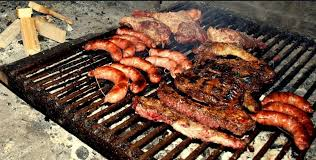
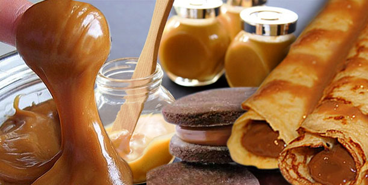
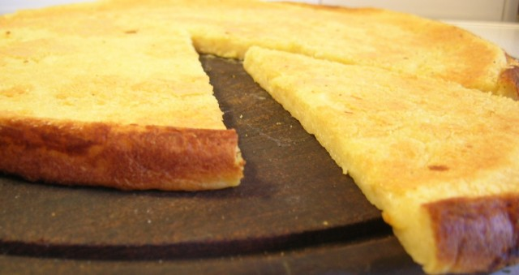

Hola bienvenidos al menu de platillos de Argentina.
Platillo |
Imagen |
Informacion |
| 1-El asado. |
 | Carne argentina de la mejor Mollejas, riñones, tripas o chinchulines. Leerlos puede resultar desagradable pero uno no se puede ir de un asado sin probar las deliciosas achuras (vísceras de la vaca), número uno entre las comidas argentinas más ricas.
|
|  |
En todo y con todo Imprescindible en esta lista, se lo disputan Argentina, Uruguay y Chile, especialmente en el caso de los alfajores. Pero el dulce de leche puede ser el rey en facturas (bollería) y panqueques, o incluso solo, para los más golosos, a cucharadas.
|
|
|
3-Pizza con fainá.
|
 | Una típica combinación "Moscato, pizza y fainá" dice una famosa canción. El vino dulce como acompañante de esta tremenda combinación a la italiana: pizza y fainá (masa hecha con harina de garbanzos y aceite de oliva). Top 3 de las comidas argentinasmás ricas. |